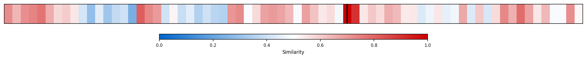
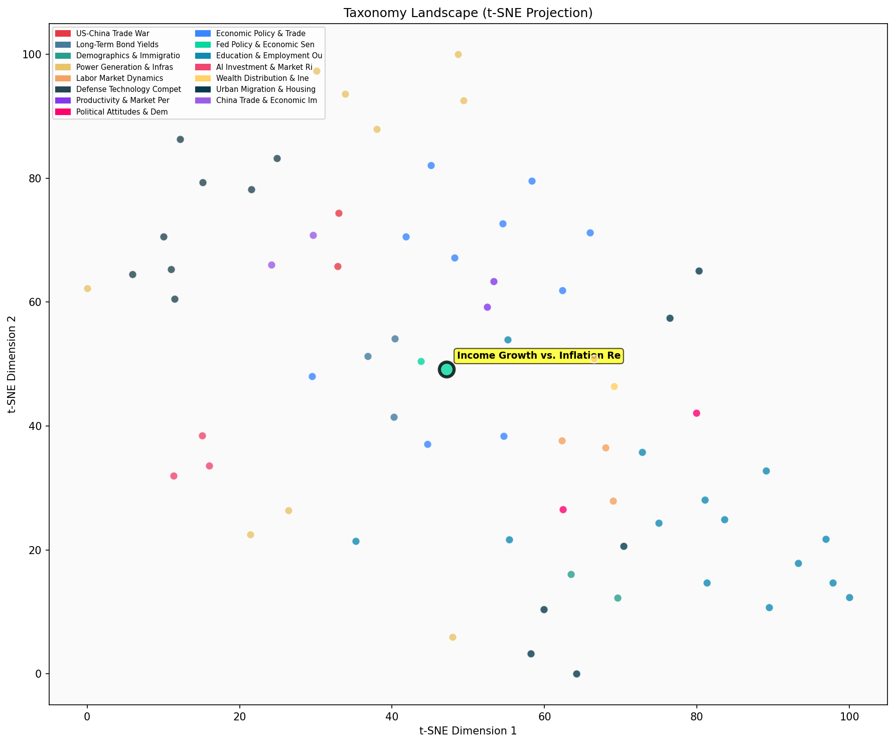

Description
This subcluster examines the disconnect between macroeconomic indicators and household financial reality, focusing on how income growth intersects with inflationary pressures across different economic strata. Articles predominantly feature data-driven analyses from major financial institutions like JPMorgan and Bank of America, alongside economic commentary from prominent analysts like Krugman and Zandi. The content explores middle-class spending patterns, real wage dynamics, wealth distribution effects, and consumer sentiment metrics. Unlike broader Fed policy discussions, this subcluster specifically interrogates why positive aggregate statistics may not translate to improved household experiences, highlighting the divergent impacts of inflation on essential versus discretionary spending across income quintiles.
Similarity to All 70 Subclusters
Each cell represents a subcluster. Color intensity shows similarity (blue=low, red=high). Black line marks current subcluster position.
Relationship to Primary Clusters
Average similarity to each of the 15 primary clusters. Larger area = stronger relationship to that cluster.
Taxonomy Landscape
All 70 subclusters positioned by similarity (t-SNE). Current subcluster highlighted with label. Click to enlarge.
Network Connections
Current subcluster at center, connected to related subclusters. Line thickness = similarity strength.

Most Representative Articles
-
1. Core consumer goods inflation has been accelerating over the past few months, reversing a long-term
-
2. .@_C_Klein notes that as of Q3 2023, growth in the total cash compensation paid to workers had rever
-
3. .@M_C_Klein argues that nominal annual income growth at 6-7% is inconsistent with the Fed's 2% targe
-
4. .@JasonFurman notes headline CPI inflation fell to an annual rate of 3% year-over-year. He cautions
-
5. Nominal annual wage growth is 4.5-5%, 1.5-2pp faster than pre-pandemic. Absent a surge in productivi
Edge Cases (Boundary Articles)
-
1. Wealthier individuals tend to consume less & save more, driven by bequest motives & heterogeneity. AThis article is borderline because while it discusses income and consumption patterns across economic strata (relevant to income growth dynamics), its primary focus is on wealth distribution and savings behavior by income quintiles rather than the relationship between income growth and inflation. The content aligns much better with wealth concentration analysis, as evidenced by its higher similarity (0.64) to the "Top Percentile Wealth Concentration Trends" cluster.
-
2. Asian savings have led to large current-account surpluses, averaging $525bn annually over the past fThis article is borderline because while it mentions Asian savings and current-account surpluses (macroeconomic indicators), it doesn't address the core theme of how income growth relates to inflation's impact on household finances. The content is more naturally aligned with "Currency and Trade Balance Dynamics" since it focuses on international financial flows and trade balances rather than the domestic income-inflation disconnect that defines the assigned cluster.
-
3. McDonald’s reported that same-store sales in the US fell 3.6% y/y, which the firm attributed to consThis article is borderline because while it provides concrete evidence of consumer financial stress (declining McDonald's sales due to "consumer uncertainty"), it only indirectly relates to the income growth vs. inflation theme without explicitly discussing wages, income trends, or inflationary pressures. The article shows the real-world impact of economic conditions on consumer behavior but lacks the specific focus on the relationship between income growth and inflation that defines the cluster's core theme.
Original Dendrogram